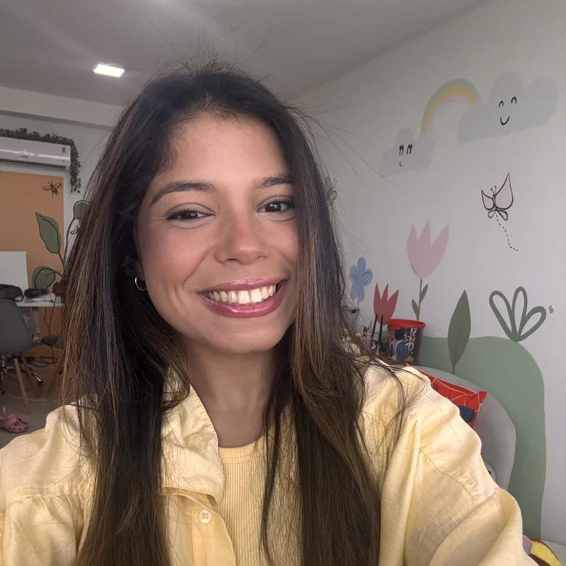
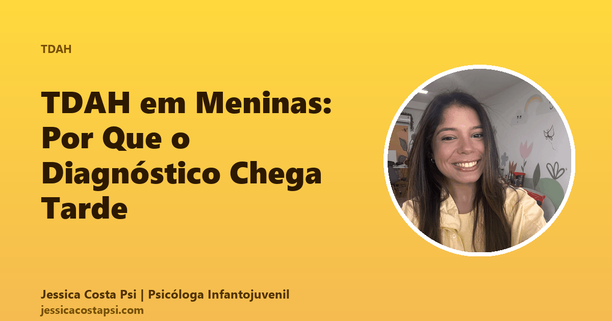
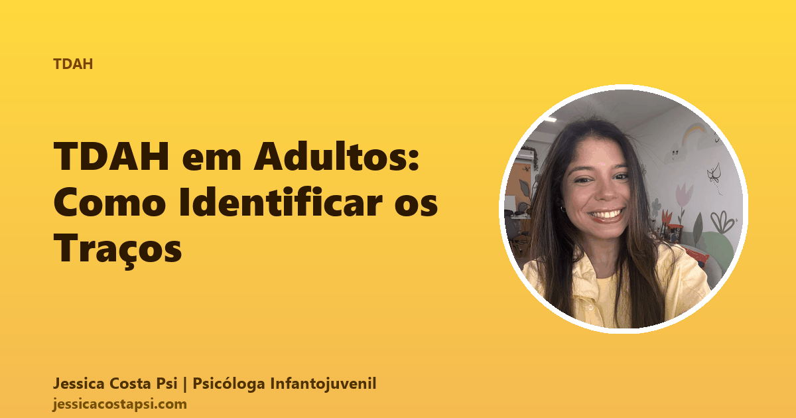

Atendimento de crianças e adolescentes com Transtorno do Déficit de Atenção e Hiperatividade usando Terapia Cognitivo-Comportamental (TCC) e treino de funções executivas. Avaliação neuropsicológica completa com instrumentos validados (CONNERS-3, NEPSY-II, WISC-IV).
Atendo no Recreio dos Bandeirantes e online. Trabalho integrado com escola, psiquiatra e fonoaudiólogo quando necessário. CRP 05/79764.

TDAH não é só "criança agitada". Existem três apresentações distintas, e a mais comum em meninas costuma ser invisível para a escola.
A apresentação mais conhecida: não consegue ficar parado, fala demais, age sem pensar, interrompe. A escola normalmente sinaliza cedo porque atrapalha a turma.
A mais comum em meninas. Sonha acordada, parece distraída, "no mundo da lua". Invisível para o sistema escolar — não atrapalha, não chama atenção. Diagnóstico costuma chegar tarde.
Mistura das duas apresentações. Costuma ter mais prejuízo funcional e demandar acompanhamento multimodal (psicoterapia + medicação + escola adaptada).
Trabalho regulação emocional, manejo de impulsividade, organização de pensamentos automáticos, técnicas de enfrentamento de procrastinação e construção de autoestima — central porque crianças com TDAH carregam muito sentimento de "esforço não rende".
Decomposição de tarefas em passos pequenos, rotinas visuais, técnicas de gestão de tempo adaptadas à idade, estratégias de memória de trabalho. Mudo a ESTRATÉGIA, não a criança — é assim que se vive bem com cérebro TDAH.
Trabalho com a escola para implementar adaptações pedagógicas conforme Lei Brasileira de Inclusão (LBI 13.146/2015): tempo estendido em provas, ambiente menos estimulante, materiais adaptados, intervalos previstos.
Famílias TDAH precisam aprender a mudar AMBIENTE, não só comportamento da criança. Trabalho com pais comunicação assertiva, manejo de crises, rotinas de casa e fortalecimento do vínculo.
É comum pais descobrirem o próprio TDAH depois que o filho é avaliado. Tenho parentes próximos com TDAH e cresci entre rotinas que precisavam ser reinventadas, conversas que mudavam de tópico no meio, e o sentimento de "esforço não rende". Diagnóstico não é rótulo — é mapa. E quando os adultos da casa se conhecem, a criança evolui mais rápido.
Conteúdos que escrevo para famílias entenderem o TDAH em diferentes idades e perfis.

Como o TDAH se apresenta diferente em meninas e adolescentes, e por que tantas só descobrem na vida adulta.
Ler artigo →
Por que tantos adultos só descobrem o TDAH agora — desatenção, hiperatividade interna, disfunção executiva e sensibilidade à rejeição.
Ler artigo →Estratégias práticas para crianças com TDAH na sala de aula, e como o laudo apoia adaptações pedagógicas.
Ler artigo →Guia passo-a-passo do processo de testagem para investigar TDAH: WISC, NEPSY, CONNERS e instrumentos complementares.
Ler artigo →Deixe seu contato — converso pessoalmente com você sobre próximos passos.